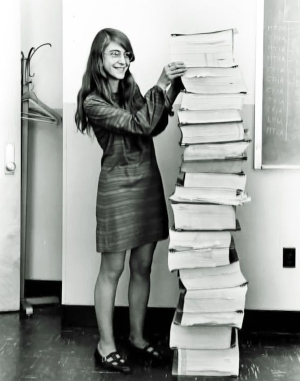

Margaret Hamilton es una científica computacional, matemática e ingeniera del Software,y fue una auténtica pionera en una época en la cual la programación no se consideraba ni ciencia.
Algunos de los logros más grandes de su vida son los siguientes:
En 1960 comienza a trabajar para el Departamento de Meteorología del Instituto Tecnológico de Massachusetts (MIT).
Gracias a sus conocimientos en matemáticas y programación, fue una de las encargadas en diseñar el software que permitía predecir el tiempo
Se involucra en el proyecto SAGE del Laboratorio Lincon del MIT desarrollado entre 1961 y 1963 que, aunque nació como un proyecto de predicción del clima, rápidamente pasó a ser un proyecto militar. Fue la encargada de desarrollar el software para el primer ordenador AN/FSQ-7 que buscaba aviones “no-amigos” en el espacio aéreo norteamericano.
El programa Apolo. Margaret se une al Laboratorio Charles Stark Draper del MIT tras su éxito en el software militar. Fue la encargada junto con su equipo de hacer funcionar el
Módulo Lunar y el Módulo de Mando. Minutos antes de que el Apolo aterrizara, hubo un fallo que hizo saltar todas las alarmas, pero debido a la robustez del software, consiguió aterrizar. Según sus propias palabras “Si el ordenador no se hubiera diseñado para recuperar errores, dudo que el Apolo hubiera aterrizado en la Luna”.
El esfuerzo de Margaret se ha visto recompensado en los innumerables premios que ha recibido a lo largo de su vida. Además del Exceptional Space Act Award de la NASA, vio reconocida su labor con la Presidencial de la Libertaden 2006, el mayor reconocimiento concedido a un civil en Estados Unidos.
Negocios propios de Margaret Hamilton
En 1976, Hamilton cofundó con Saydean Zeldin una empresa llamada Higher Order Software (HOS) para desarrollar más ideas sobre la prevención de errores y la tolerancia a fallos que surgen de su experiencia en el MIT trabajando en el programa Apollo. Crearon un producto llamado USE.IT, basado en la metodología HOS que desarrollaron en el MIT. Se utilizó con éxito en numerosos programas gubernamentales, incluido un proyecto para formalizar e implementar C-IDEF, una versión automatizada de IDEF, un lenguaje de modelado desarrollado por la Fuerza Aérea de EE. UU. En la Fabricación Asistida por Computadora Integrada (ICAM) proyecto. Hamilton fue la directora ejecutiva de HOS hasta 1984 y dejó la empresa en 1985.
En marzo de 1986, fundó Hamilton Technologies, Inc. en Cambridge, Massachusetts. La empresa se desarrolló en torno al lenguaje de sistemas universal (USL) y su entorno automatizado asociado, el conjunto de herramientas 001, basado en su paradigma de desarrollo antes hecho para el diseño de sistemas y desarrollo de software

Margaret Hamilton y sus líneas de códigoAudio del hombre llegando a la luna